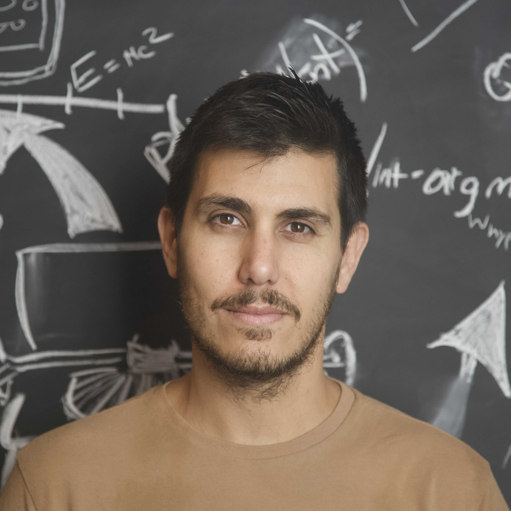

Aviad Levis
Assistant Professor
Computer Science · Astronomy & Astrophysics
University of Toronto
I develop computational imaging tools for scientific discovery, pushing the limits of what can be observed.

About my work
My work is interdisciplinary, at the intersection of artificial intelligence and physics. I lead PI-Vision (Physics-Informed Vision & Imaging), a research group developing new imaging systems and physics-aware algorithms for inverse problems across astronomy, Earth observation, and the physical sciences.
I hold appointments in the Department of Computer Science, the David A. Dunlap Department of Astronomy & Astrophysics, and the Dunlap Institute for Astronomy & Astrophysics. PI-Vision is part of the Toronto Computational Imaging Group.
My work is supported by the Ontario Research Fund (ORF) and the Natural Sciences and Engineering Research Council of Canada (NSERC).
In the media
Space.comAI reveals a new 3D view of the Milky Way’s black holeSky & TelescopeWatch a hotspot orbit our galaxy’s black holeScience FridayBlack hole flares reconstructed in 3DTeaching
A seminar on neural representations, differentiable solvers, and physical models.
A first-principles introduction to acquiring and processing 2D images.
alevis@cs.toronto.edu
University of Toronto
Bahen Centre, Office 7250
40 St George St
Toronto, ON M5S 2E4
Bio
Aviad Levis is an assistant professor of Computer Science and Astronomy & Astrophysics at the University of Toronto and an affiliated faculty member at the Dunlap Institute. His research spans scientific computational imaging and AI for science. Prior to that, he was a postdoctoral scholar at Caltech, supported by Zuckerman and Viterbi fellowships, and holds a Ph.D. from the Technion (2020) and a B.Sc. from Ben-Gurion University (2013).